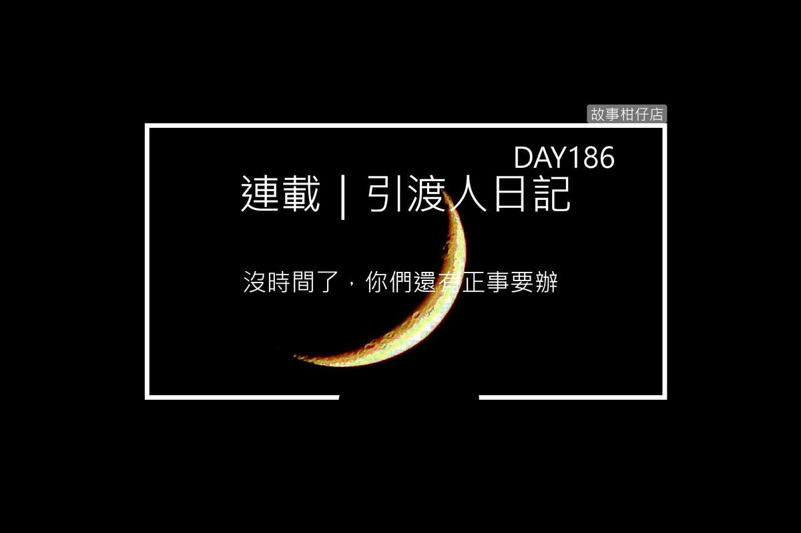

引渡人日記 day 186（七）☄朝如青絲暮成雪☄

天地傾滅，星月無光，寒鴉枯枝，雨雪霏霏，冬無眠交叉雙臂，雙手各執一短戟，左「吻星」，右「啄月」，刃端泛著水汪汪寒光，卻冷不過他白如粉雪的臉龐。
他擺盪雙手，平舉雙戟，殘風湧成滾滾巨浪，捲起千堆千堆雪。所有人都幾乎快站不住腳，我的眼睛也被雨雪打得睜不開，唯有冬無眠漠然昂首。
「砰！」蓄勢待發的日遊從身後殺來泡泡，強勁力道就像一隻獵豹，然而冬無眠忽而前進，忽而後退，延展身軀，像跳著一支古怪的舞步。他柔轉手臂，那泡泡竟在他臂彎裡滴溜轉，日遊火大，一箭步向前就要取，冬無眠趁勢推出雙戟就要刺向他，幸虧泡泡成了緩衝，化成碎片。
雖然擋過致命一打擊，但日遊終究被泡泡碎片割出密密麻麻的傷口，黑哥又持草帽跳起，準備剜下他腦袋，豈料冬無眠高舉雙戟，霎那間繁星滿佈，月娘高掛。宛如停不下來的陀螺，夜幕旋轉，眾星逆行，月無盡陰晴圓缺。他雙手交纏翻動，短戟舞如蝶翼，輕快飄忽地飛著，停靠黑哥胸前，唰唰兩刀。
黑哥長袍撕裂出大大的十字，吃了痛狠狠重摔，白姐拖著開始潰爛發膿的手臂要過去關心，遭黑哥一腳推開，「旁邊老實待著！」
本來我也以為，在旁邊老實待著就沒事，但眼看黑哥他們愈打愈無力，冬無眠舞起雙戟卻仍游刃有餘，而且風雪愈來愈狂，還夾著枯葉樹枝，再這樣下去，受重傷的白姐一定會撐不住。
又一次，眼看日夜遊就要解決對手了，豈料冬無眠竟僅以單腳蹲屈，不斷旋轉身子，吻星啄月戟在雪地劃出一個深深的大圓，像結界似的，一靠近就被狠狠彈開，就連夜遊堅硬如鋼的髮鑽也斷成兩截。黑哥一行人氣喘吁吁，身上佈滿大小傷痕。
樹梢寒鴉嘎嘎啼叫，像是在提醒我們時間不多。沈不住氣的日遊顧不了這麼多，像頭牛似的直往冬無眠奔去，只見冬無眠微蹙眉頭，手一揚，刃端挑起日遊衣裳，狠狠將他拋摔出去。
日遊摔落地前，我突然看見一旁夜遊的頭髮迅速地變長、變長，長至垂地，髮絲像萬隻小蛇蠕動著，爬向正分神對付黑哥的冬無眠。
髮絲纏上冬無眠腳踝時，他才大夢初醒，然而更驚惶的是日遊，鼻青臉腫的他大喊：「哥！不要！拜託你收手！」
「沒時間了，你們還有正事要辦。」
夜遊雙手握拳，全身肌肉繃緊，髮絲仍在延長，飛舞在空中、地面，像一碰就斷的蜘蛛絲。奇怪的是，削鐵如泥的吻星啄月戟此時徹底失靈，一觸細緻髮絲，刃端寒氣便消解大半，只能任由纏人頭髮繾綣上身。
那髮絲緊纏住冬無眠雙腳，一扯，一路將他拖行到夜遊鼻尖前。接著，那髮絲竟將兩人緊緊捆在一起，冬無眠手動作範圍有限，仍硬將雙戟刺進夜遊胸膛。
「王八蛋，反正老子已經打算同歸於盡了。」夜遊顫抖雙唇，髮絲愈絞愈緊，甚至由黑轉灰，再從灰漸白，白成如雪一般。
「百憂！」冬無眠吼道，「忘了我們喝的那千盞酒了嗎？」
那把跌落在旁的相思弩，彷彿聽見冬無眠的喊叫，不斷地震動，而我動彈不得，只能含淚看著冬無眠與夜遊兩人絞著。
喀啦喀啦。骨頭筋脈碎裂的聲音陣陣傳來，他們倆幾乎纏成一個巨大蠶蛹，立在風雪中。不知冬無眠哪來的力氣，一使勁，居然刳破夜遊腹肚，腸子幾乎都給扯了出來，染紅了大蠶蛹。
「哥！快住手！你放開他就沒事了！」日遊跪地哭喊。
「給我振作起來，你等下還有仗要打。」夜遊用盡吃奶力氣說，「黑白無常，我弟，就交給你們了。」
眼見冬無眠也只剩一口氣了，他露出一個很無奈的微笑，緩緩地吐出半圈白霧，雙眼無神望著我說：「為什麼事到如今，我仍等著兔子回來呢？」
說完，他們兩人同時化為綿綿粉雪，吹散在狂風中，而夜遊的白髮落在雪地，也消失無蹤。
忽然之間，暴風雪止息了，夜幕繁星紛紛墜落，如流星一顆又一顆劃過天際。原本閃亮的星空，現在徒剩一彎暗淡的月，伴著寒鴉無盡的啼叫。